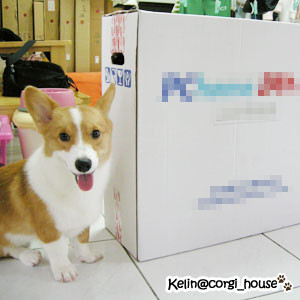
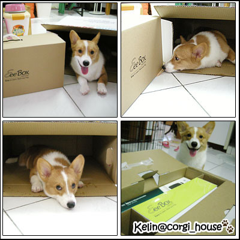
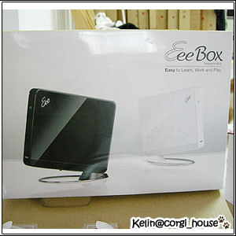
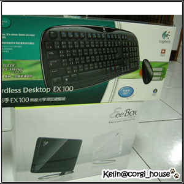
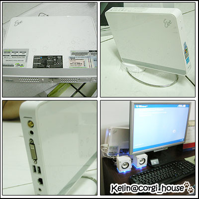
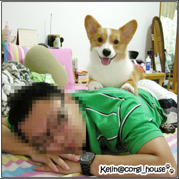
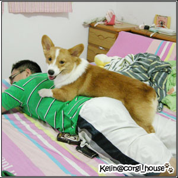
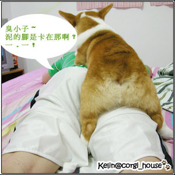

終於買了自己的東西了!!!哈
有了摩卡那臭小子~我的鈔票都貢獻給他了!!

最近覺得我的電腦真的是阿公級了!!開網頁.開檔什嘛的都很遲鈍
所以請猛哥幫我升級!!!結果他居然嫌我的太老舊~而且顯示卡也停產了
so我真的很勉為其難的敗了華碩的 EeeBox 哈哈!!
送來箱子超大一個的!!摩卡卡很興奮一直在旁邊打轉~所以就順便讓他參一咖當麻豆嘍!

結果拆開大箱子其實只裝了一半!!
許卡卡先生立刻鑽進去東聞西聞
結果沒有聞到任何食物的味道!失望不屑的表情立刻寫在臉上!
ㄟㄟㄟ小捧油!泥整個臉可以在"垮"一點沒瓜西~
(平常拆箱都他的東西~今天換買老木的居然臉臭臭...皮在癢了!)


為了配合我的喇叭顏色~所以我買了白色這款
還搭配送了羅技的無線鍵盤+滑鼠(計個好啊!!)

打開來機體本身很小一台~不到A4大小~超薄1.6公分
白色看起來也很有質感!重點是非常的省空間~把主機藏在營幕後面
而且據說很省電啦!!
網站上寫的~平均耗電功率低於20瓦/小時，相較一般桌上型電腦的耗電量，平均小了10倍左右，可說相當省電。
以我家有三台電腦同時使用來看~省電這優點是還蠻吸引人的
目前使用一週~它開機速度真的很快!!其他功能都足以應付我這種只做一般上網的人~
價格也很合理!!換了新電腦就是爽一個字啦!!!
謝謝猛老大~嘻嘻
為了表達我們母子倆的感恩~我請了摩卡卡去幫拔拔按摩

畫面很溫馨吧!!!!爸特.....

從側面看怪怪的吶!!!!

一.一 摩卡卡~泥的腳是插在那邊啊!!!!
以上簡漏的開箱文報告完畢!!! ^^